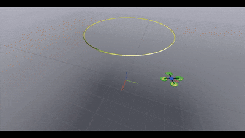
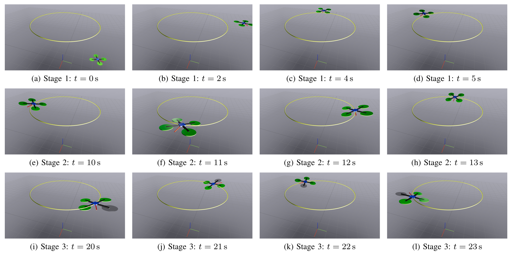

Stage 1: Path convergence
The quadrotor approaches the desired circular path from an off-path initial condition.
A nonlinear quasi-static feedback controller for path following of a quadrotor UAV under complete single-rotor failure, with path-invariance and local exponential convergence guarantees.

This project accompanies a nonlinear control framework for a quadrotor unmanned aerial vehicle experiencing a complete single-rotor failure. Given a geometric curve in three-dimensional space, the method characterizes and stabilizes the zero-dynamics manifold, also called the path-following manifold, which represents all feasible motions along the desired path. Stabilizing this manifold ensures path-invariance: if the UAV is initialized on the path with the appropriate transverse conditions, then the closed-loop vehicle remains on the path despite the rotor failure. The proposed quasi-static feedback controller achieves set stabilization without introducing additional dynamic controller states and provides local exponential convergence to the path-following manifold under regularity conditions. The approach is validated in a physics-based Drake simulation with Meshcat visualization.
The desired path is represented as the intersection of two independent surfaces, \[ \mathcal{C} = \{p \in \mathbb{R}^3: h_1(p)=0,\; h_2(p)=0,\; \nabla h_1(p)\times \nabla h_2(p)\neq 0\}. \] The outputs \(h_1\) and \(h_2\) define transverse errors to the path, while a third output \(h_3=s(p)\) parameterizes motion along the path.
The main idea is to use quasi-static feedback to algebraically recover the thrust and then compute the remaining torque inputs through a reduced decoupling matrix. The thrust is obtained from the second derivative of \(h_2\):
\[ u_t = m \frac{\beta_2-\nu_2} {\langle \nabla h_2, R_3\rangle}, \qquad \nu_2 = -K_2 z^2. \]
The remaining inputs \(\tau_2\) and \(\tau_3\) are computed from the fourth derivatives of \(h_1\) and \(h_3\), using a \(2\times 2\) decoupling matrix.
The implementation uses Drake for physics-based rigid-body simulation and Meshcat for live browser visualization. The UAV tracks a circular path, then experiences a complete rotor failure at \(t=20\) s. The controller switches to the fault-tolerant quasi-static feedback law and continues enforcing path following.

Stage 1: Path convergence
The quadrotor approaches the desired circular path from an off-path initial condition.
Stage 2: Nominal path following
Before failure, the vehicle follows the desired path with four healthy rotors.
Stage 3: Rotor failure
At \(t=20\) s, rotor 1 fails. The rotor color changes in the Meshcat visualization.
| Time | Observed behavior |
|---|---|
| 0--20 s | The quadrotor tracks the circular path in the nominal four-rotor configuration. |
| 20 s | Rotor 1 fails. The rotor color changes in the Meshcat visualization. |
| 20--40 s | The quasi-static fault-tolerant controller compensates for the failure and maintains path-following behavior. |
The full implementation is available in the GitHub repository: gradslab/quasistatic-ftc.
The repository contains the Drake simulation, Meshcat visualization, the quasi-static feedback controller, and CSV logging for position, attitude, velocity, angular velocity, force, thrust, and torque signals.
# Clone the repository
git clone https://github.com/gradslab/quasistatic-ftc.git
cd quasistatic-ftc
# Create and activate a clean Python environment
python3.10 -m venv drake-env
source drake-env/bin/activate
# Upgrade pip
pip install --upgrade pip
# Install Drake
pip install drake
# Install additional dependencies
pip install numpy scipy matplotlib meshcat
# Verify Drake installation
python -c "import pydrake; print('Drake installed')"
# Run the simulation
python main.pyWhen the simulation starts, open the Meshcat URL printed in the terminal, typically:
http://localhost:7004The simulation writes logged data to:
Drake_data.csv.
├── main.py
├── qsf_controller.py
├── draw_curve.py
├── UAV_visual.py
├── media/
│ └── conv.gif
├── docs/
│ ├── index.html
│ └── media/
│ ├── conv.gif
│ └── BigPicture.png
├── Drake_data.csv # generated after running
└── README.md@inproceedings{allawati2026quasistaticftc,
title = {Quasi-Static Fault-Tolerant Feedback Control of a Quadrotor under Rotor Failure with Provable Safety Guarantees},
author = {Al Lawati, Mohamed and Akhtar, Adeel},
booktitle = {Proceedings of the 2026 IEEE Conference on Control Technology and Applications (CCTA)},
year = {2026},
address = {Vancouver, BC, Canada},
note = {Accepted}
}